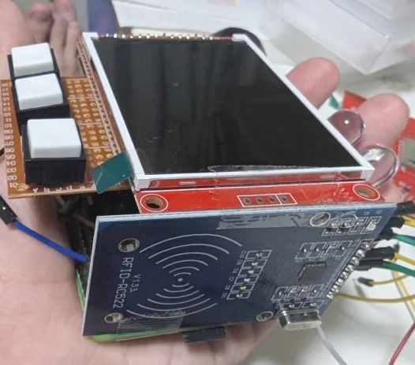
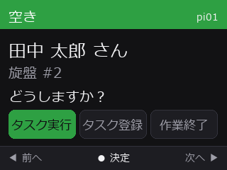
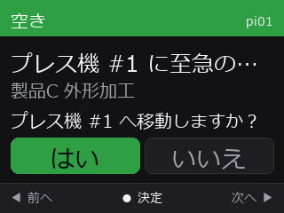
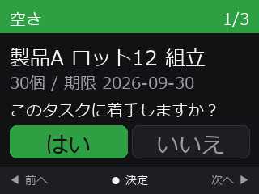
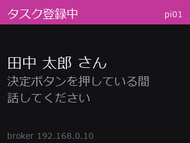
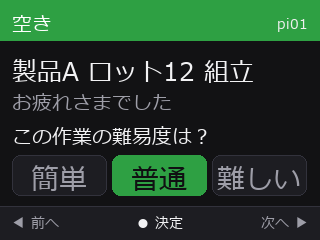
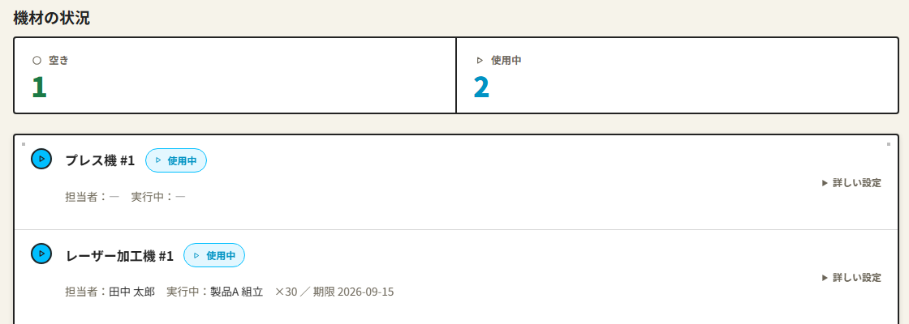

共有機材を複数人で使う中小製造業の現場では、次の問題がある。
本研究では、各機材のモジュールに社員証をタッチするだけで作業の開始・終了・登録ができるタスク管理システムを製作した。
| 目的 | 方法 | 実ログでの結果 |
|---|---|---|
| IP 設定をなくす | UDP でサーバを探索 | IP の変更に追従 |
| 停止を知らせる | MQTT の LWT | offline / online を即反映 |
| 切断から戻す | 自動再接続 | 53 回中 53 回復旧（1 秒） |
2026/8/31〜9/9 の実ログ。プロセスは一度も停止しなかった。

割当：作業者ごとのベイズ線形回帰による Thompson Sampling [1] で、速く終えられそうな人を予測する。資格は候補を絞る制約として扱う。
音声登録：Whisper [2] の文字起こしから、Gemma 3 がタスクの各欄を取り出す。

常に同じ 3 項目。使用中なら断る。

他の機材の優先タスクへ誘導する。

1 件ずつ提示し、「はい」で着手。

押している間だけ録音する。

完了を記録し、体感難易度を回答。

| 場面 | 使い方 | 効果 | |
|---|---|---|---|
| 作業者 | 機材を使う | 空いている機材でタッチ | ゴースト予約が起きない |
| 仕事を探す | タッチで重要な順に出る | 探す・尋ねる手間が減る | |
| 至急の仕事 | 他の機材へ誘導される | 重要なタスクを忘れない | |
| 作業を終える | 再タッチで完了を記録 | 報告が要らない | |
| 仕事に気づく | ボタンを押して話す | その場でタスクにできる | |
| 管理者 | 現場の確認 | 管理画面で状況を見る | 見に行かなくてよい |
| 割り振り | 手動か AI で決める | 偏りを防ぐ |
| 確認した内容 | 結果 |
|---|---|
| 他機材への誘導 | 移動元・先に表示 |
| 使用中の機材 | メニュー前に拒否 |
| 無資格の作業者 | 候補に出さない |
| タッチの連打 | 処理は 1 回のみ |
| 全体（11 本） | 179 項目すべて合格 |
一時 DB を使い、実際のコードのまま検証した。
Whisper には現場の語彙をヒントとして与えている。
| ヒントあり | ヒントなし |
|---|---|
| 旋盤の切粉清掃、至急 | 旋盤の接吻清掃支給 |
| 治具Bの芯出し | チグBの新出し |
| 振れが出ています。 | フレが出ています |
ヒントは 224 トークンまでで、既に 116 を使っている。全語彙は入らず、人手での保守も難しい。
| 入力文 | タスク名 | 優先度 | 数量 | 資格 |
|---|---|---|---|---|
| 旋盤の切粉清掃、至急をお願いします。 | 旋盤の切粉清掃 | 至急 | 1 | ― |
| 製品Cの外形加工20個、明日までにお願いします。 | 製品Cの外形加工 | 高 | 20 | ― |
| フォークリフトで資材置き場から鋼材を運んでおいてください | 資材置き場から鋼材の運搬 | 通常 | 1 | フォークリフト運転 |
| フレームの溶接をお願いします。10本です | フレームの溶接 | 通常 | 10 | アーク溶接 |
各欄は正しく取れている。精度を左右するのは前段の文字起こしである。
図 4 修正のたびに語彙が育つ循環
登録データ（機材名・過去のタスク名）から語彙を自動で組み立てる。
関連研究 [3]–[6]
語彙なし／固定語彙／自動構成を同じ音声で比較
語の数と、誤挿入との釣り合いを調べる
運用につれ正解率が上がるかを見る
工場の騒音を重ねて E1 を再実施
指標はタスクの各欄が正しく登録された割合とする。